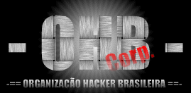

Atenção
Venho por meio deste comunicar que esta página foi hackeada, em razão de protestos que estou fazendo com relação ao que acho do governo do nosso país. Ao WebMaster, que não tem nada a ver com o meu desespero com o que vem acontecendo no Bras(z)il, eu peço desculpa pois sei do trabalho que dá pra criar uma página (dá trabalho nenhum não seu preguiçoso)...
Atenção presidente do Brasil, FHC. É com pesar que escrevo isso, pois o que está acontecendo com nosso país é muito doloroso... Veja bem a situação que passamos, sem emprego, a cada dia cria e aprova um novo imposto... Como é que vai ficar, mais imposto sem emprego? Quantas página assim já foram feitas em protesto????? Será que você viu todas???? Ou estava se deliciando com suas mordomias enquanto mais um morria na rua de fome e nem deu pra você ver a página?????
Pois é...
Tem que acabar com esses sites todos, e colocar isso na index mesmo... Me chamam de criminoso??? Nada, qualquer um pode fazer isso que eu to fazendo, não é tão misterioso assim... O que eu faço não é crime, o que nós fazemos não é crime, fazemos isso para o bem do país, e quem vai me provar que não é para o bem??? Mas e vocês??? Se acham que eu sou criminoso, eu acho o contrário, ou sei lá, acho o mesmo de vocês...
Mas o pior...
Tantas e tantas vezes falamos, e nada vemos, o Bras(z)il não existe, qual é o brasileiro que pode acordar e falar: "Eu tenho orgulho de ser brasileiro"??? Só os que ganham dinheiro nas custas dois outros, os que não têm consciência de nada, aqueles "ladrões" que temos em nosso país. Quando ouvimos o hino do Bras(z)il, ao invés de ter aquele gostinho de orgulho, como da vez que o Bras(z)il ganhou a copa do mundo (1994), sentimos um ódio, uma vontade imensa de fazer alguma coisa pelo país, mas sem ter como...
Infelizmente, mais um protesto que não vai valer de nada, mas pelo menos eu estou tentando...
Hacked By Copag
Deixem o Globher em paz, ele é apenas uma criança como eu, sites são coisas em um mundo externo, que não tá valendo nem pra protestos mais... Não vão maltratar uma pessoa que tem um ótimo cérebro, já são poucos, e ainda querem prendê-lo...
Fica aí o meu protesto, e quem puder mostre-o a FHC!